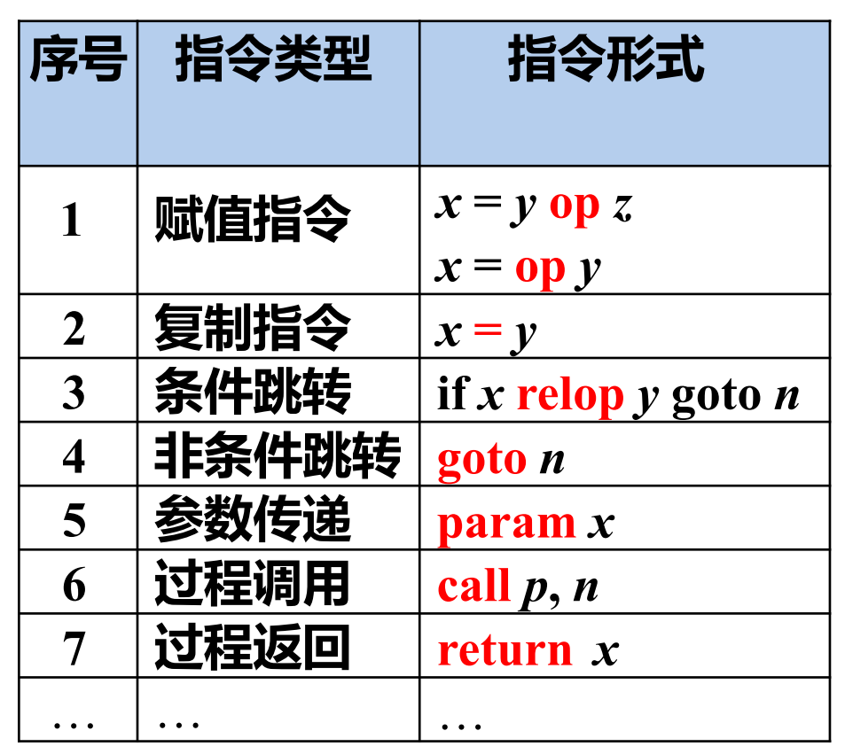
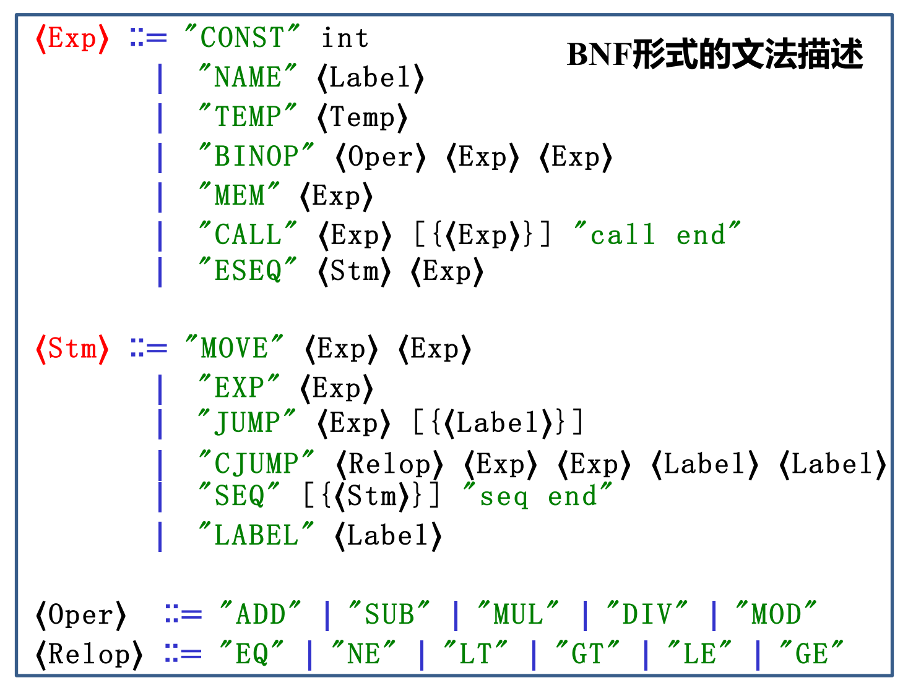
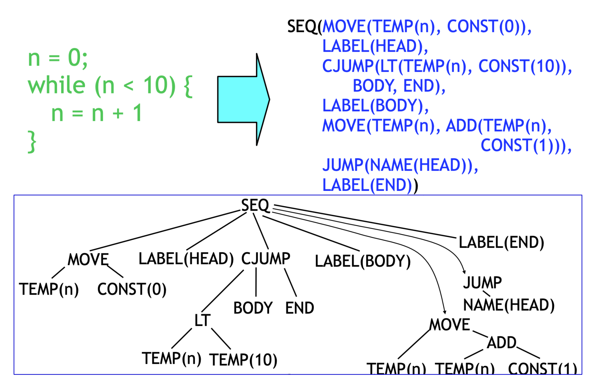
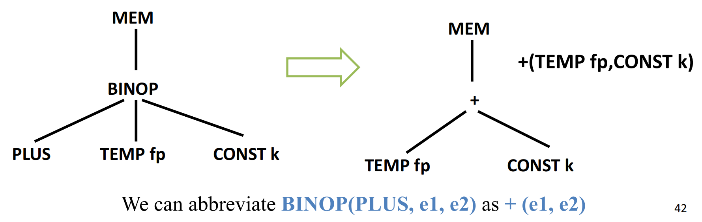
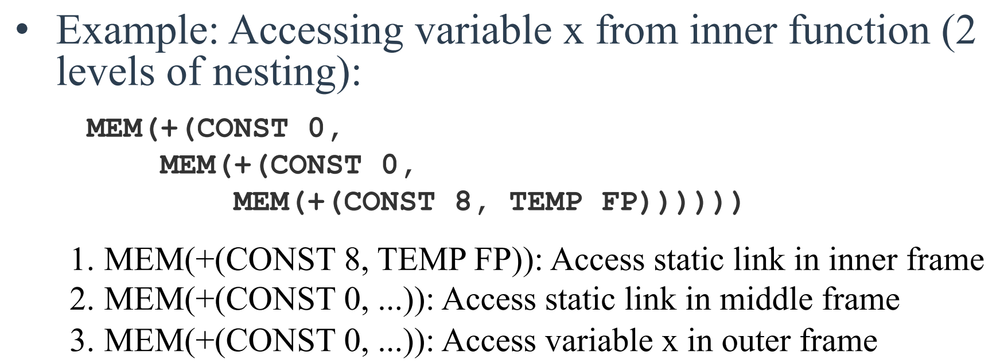
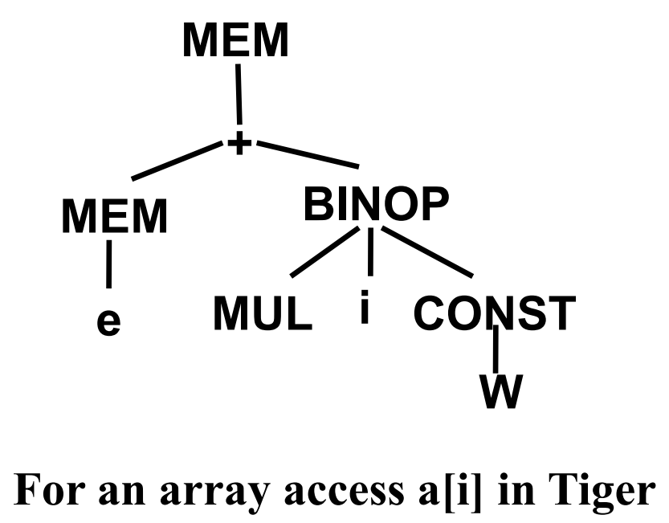

# IR
Intermediate Representation
解决高级语言和目标机器汇编语言之间的转化
为什么需要 IR:
- 更模块化、可迁移
- 分层分析和优化
IR 可以有好多层：IR1->IR2->…->IRn
编译流程划分
前端：源代码 -> 词法分析 -> 语法分析 -> 语义分析（IR 之前的都是）
中端：基于 IR 的分析与变换（可能生成新 IR，可以做一些机器无关优化比如循环展开等）
后端：指令选择 -> 寄存器分配 -> 指令调度 -> 机器码（IR 之后的）
# Three-Address Code
最多有三个操作数
x = y op z
“地址” 可以具有如下形式
- 源程序中的名字 (name)
- 常量 (constant)
- 临时变量 (temporary)

最常见的实现方法是将三地址代码作为四元组实现
example
t1=x>0 (gt, x, 0, t1)
if_false t1 goto L1 (if_f, t1, L1, _)
fact=1 (asn, 1, fact, _)
label L2 (lab, L2, _, _)
# IR Tree
两大类节点：
- 表达式 Exp
- 语句 Stmt
文法：

表达式：
| Node | Description | Example |
|---|---|---|
| CONST(i) | 整数常量 i | CONST(42) → the value 42 |
| NAME(n) | 符号常量 n，通常是一个 label，值是 label 的地址 | NAME(L1) → address of label L1 |
| TEMP(t) | 临时变量 t (like register) | TEMP(t123) → contents of temporary t123 |
| BINOP(o,e1,e2) | 对 e1 和 e2 执行二元操作 o | BINOP(PLUS,TEMP(t1),CONST(1)) → t1+1 |
| MEM(e) | Memory access | MEM(CONST(100)) → contents at address 100 |
| CALL(f,l) | Function call, l 是参数列表 | CALL(NAME(print),[TEMP(t1)]) → call print(t1) |
| ESEQ(s,e) | 先执行语句 s，再求值表达式 e 并返回 e 的结果 | ESEQ(MOVE(TEMP(t),CONST(1)),TEMP(t)) → (t=1; t) |
语句：
| Node | Description | Example |
|---|---|---|
| MOVE(TEMP t, e) | 将表达式 e 的值赋给临时变量 t | MOVE(TEMP(t1), CONST(42)) → t1 = 42 |
| MOVE(MEM(e1), e2) | 将表达式 e2 的值存储到由 e1 指定的内存地址中 | MOVE(MEM(TEMP(t1)), CONST(42)) → *t1 = 42 |
| EXP(e) | 计算表达式 e 的值但不返回结果，通常用于有副作用的操作（如函数调用） | EXP (CALL (NAME (print), …)) → 调用 print () 函数以产生效果 |
| JUMP(e, labs) | 无条件跳转到由 e 指定的地址 | JUMP(NAME(L1), [L1]) → goto L1 |
| CJUMP(o,e1,e2,t,f) | 条件跳转，根据操作 o 对 e1 和 e2 的结果决定跳转到 t 或 f | CJUMP (LT, TEMP (t1), CONST (0), L1, L2) → 如果 t1 < 0 则跳转到 L1，否则跳转到 L2 |
| SEQ(s1, s2) | 语句序列，先执行 s1 再执行 s2 | SEQ (MOVE (…), JUMP (…)) → 先赋值再跳转 |
| LABEL(n) | 定义一个标签 | LABEL(L1) → L1: |
例子：

ADD 那个地方写成 BINOP 的写法也可以
# 翻译 AST 成 IR Tree
把 AST 表达式分为三类：
- Ex: 有结果的 AST 表达式比如 a+b
- Nx：无结果的语句的比如 print
- Cx：条件语句，值为 bool 的 AST 表达式
# translate Exp
- 翻译简单变量：
在函数中访问一个局部变量实际上是访问它在当前栈帧中的位置，所以访问一个距离 fp 的 offset 为 k 的局部变量 v，其 IR Tree 表示为:

如果通过 static link 访问一个变量，就要嵌套好几层 MEM 和 BINOP
比如这个访问嵌套两层外面的 x
最内层使用 CONST (8)：是因为需要从 inner 函数的帧指针 FP 开始，偏移 8 字节来访问静态链，该静态链指向 middle 函数的帧。
中间层和最外层使用 CONST (0)：是因为它们分别通过静态链直接访问 outer 函数的帧和变量 x，不需要额外的偏移

这个地方为什么内层是 8 中层是 0 存疑
左值和右值：= 左右的
MEM (addr) 可以是左值也可以是右值
- Scalar L-value (Tiger): 一个地址
- Structured L-value (Pascal/C): 一块内存
- 翻译算术运算
- 二元: BINOP (op, e1, e2)
- 一元:
- -x ==> BINOP(MINUS, CONST(0), e_x)
- ~x ==> BINOP(XOR, e_x, CONST(-1))
- 数组访问
e_a是表示变量a的表达式，通常是 ==MEM(+(TEMP(fp), CONST(k_a)))==MEM(e_a)：获取存储在变量a中的值，即数组基地址e_i是计算索引i的表达式BINOP(MUL, e_i, CONST(W))：计算偏移

记录字段 r.f 访问:
- 翻译控制流
对于 if e1 op e2 then stmt1 else stmt2 翻译成
1 | // 6个SEQ |
Tiger 的逻辑运算符 &(and) 和 |(or) 需要实现短路求值：只计算必要的操作数
每个 Cx 是一个 Label
- 逻辑与 (a & b) 的短路规则：
- 计算 a
- 若 a 为假，直接得到假结果（不计算 b）
- 若 a 为真，继续计算 b，最终结果即为 b 的值
- 计算 a
- 逻辑或 (a | b) 的短路规则：
- 计算 a
- 若 a 为真，直接得到真结果（不计算 b）- 若 a 为假，继续计算 b，最终结果即为 b 的值
- 循环语句
1 | while a > 0 do |
翻译成
1 | SEQ(LABEL test, |
break 翻译为直接跳转到 done
for 循环我懒得写了，也是一个道理
和汇编差不多意思
- 翻译函数
sl 是 static link。
# translate Declaration
- Variable declaration
- Type declaration
- Function declaration
- 翻译变量声明
1 | let |
1 | ESEQ( |
let body in e end 翻译成 ESEQ (body, e)
变量定义翻译成 MEM (+(FP, CONST (offset)))
初始化翻译成 MOVE (MEM (+(FP, CONST (offset))), CONST (value))
-
类型声明
No need to generate any IR tree code -
函数声明
– Prologue（序言）
– Body（函数体）
– Epilogue（尾声）
- Prologue
- pseudo-instructions to announce the beginning of a function
- 定义函数标签用于跳转 / 调用
- 修改栈指针（SP），为新栈帧分配空间，一般是
- 保存被调用者需要保存的寄存器（callee-save），如 $s0-$s7；保存返回地址（RA）
- 保存函数参数到栈中（尤其是传值调用时）；保存静态链（static link）